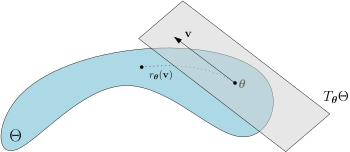

Let \(\mathcal{X}\times
\mathcal{Y}\) be the data space split along an input-label
axis. The hypothesis class is a collection of functions \(f \in \mathcal{F}\)\[f : \mathcal{X}\times \Theta \to
\mathcal{Y}.\] For example, the hypothesis class could be a
neural network with \(P\) weights
(and biases), then \(\Theta =
\mathbb{R}^P\) and \(f(\mathbf{\boldsymbol{x}},
\mathbf{\boldsymbol{\theta}})\) would be the function defined
by the network.
A solution to the supervised learning problem could be a
\(\mathbf{\boldsymbol{\theta}}^*\)
(a set of parameters) such that \[f(\mathbf{\boldsymbol{x}}_i,
\mathbf{\boldsymbol{\theta}}^*) \approx y_i\] for all given
(training) data points \(\{(\mathbf{\boldsymbol{x}}_i, y_i)\}_{i = 1}^N
\subseteq \mathcal{X}\times \mathcal{Y}\). The whole of
machine learning enterprise rests on the assumption, or rather
observation that \(f\) also
predicts the label for yet unseen data; i.e. \(f(\mathbf{\boldsymbol{x}}_{\text{new}},
\mathbf{\boldsymbol{\theta}}^*) \approx y_{\text{new}}\) for
yet unseen data \((\mathbf{\boldsymbol{x}}_{\text{new}},
y_{\text{new}})\) assumed to come from the same distribution
as the training data in \(\mathcal{X}\times \mathcal{Y}\).
Whether this is possible heavily depends on the hypothesis class
\(\mathcal{F}\). Those functions
describable by a neural network and easily discoverable by the
common gradient based algorithms have proven to work well for
distributions of data we have collected and thrown at these machine
learning models.
Finding this \(\mathbf{\boldsymbol{\theta}}^*\) is
typically achieved by a variant of gradient descent on the loss
function defined of the form \[\label{eq:lossfn}
\ell(\mathbf{\boldsymbol{\theta)}} = \frac{1}{N} \sum_{i = 1}^N
\ell_i(\mathbf{\boldsymbol{\theta}}) +
R(\mathbf{\boldsymbol{\theta}}) \quad \text{ with } \quad
\ell_i(\mathbf{\boldsymbol{\theta}}) =
c(f(\mathbf{\boldsymbol{x}}_i, \mathbf{\boldsymbol{\theta}}),
y_i),\] where \(R :\Theta \to
\mathbb{R}_{\geq 0 }\) is is called the regularizer,
responsible for biasing the hypothesis space to simpler functions
(usually meaning smaller norm parameters), and \(c : \mathcal{Y}\times \mathcal{Y}\to
\mathbb{R}_{\geq 0}\) is called the cost function, measuring
how far a prediction \(\hat y\) is
from \(y\) with \(c(\hat y, y)\) (usually \(c(y, y) = 0\)).
For classification problems (with \(K\) classes) it is common to take \(\mathcal{Y} = \Delta^K = \{(p_1, \ldots, p_K)
\in \mathbb{R}^K : p_i \geq 0, \sum_{i = 1}^K p_i = 1\}\) the
probability \(K\)-simplex, and the
cost function as the cross entropy loss \(c(\hat y, y) = - \sum_{i = 1}^k y_i \log \hat
y_i\).
It is possible to consider \(c :
\widehat{\mathcal{Y}} \times \mathcal{Y}\to \mathbb{R}_{\geq
0}\), for example when the labels \(y_i\) were given as indices and not
one-hot vectors. But unless there is a correspondence between \(\widehat{\mathcal{Y}}
\rightarrow \mathcal{Y}\) we wouldn’t be able to use \(f: \mathcal{X}\times \Theta \to
\widehat{\mathcal{Y}}\) as a label-predictor.
For the regression problem, with \(\mathcal{Y}= \mathbb{R}^{\text{out}}\)
it is common to take the \(L^2\)-norm as the cost function \(c(\hat y, y) = \|\hat y -
y\|^2\).
The parameter space \(\Theta\) needs to be a differentiable
manifold and \(\ell\) needs to be a
differentiable function of \(\mathbf{\boldsymbol{\theta}}\) (at
generic points) in order for the gradient methods to make
sense.
The most ubiquitous setting is when \(\Theta = \mathbb{R}^P\) and we then use
the gradient descent method \(\mathbf{\boldsymbol{\theta}}^{\text{updated}}
= \mathbf{\boldsymbol{\theta}} - \alpha \nabla
\ell(\mathbf{\boldsymbol{\theta}})\).
On a not necessarily flat manifold, we would need a
retraction function \[\qquad \qquad
r_{\mathbf{\boldsymbol{\theta}}} : T_{\mathbf{\boldsymbol{\theta}}}
\Theta \to \Theta \text{ satisfying }
r_{\mathbf{\boldsymbol{\theta}}}(\mathbf{\boldsymbol{0}}) =
\mathbf{\boldsymbol{\theta}} \text{ and }
\frac{\,\mathrm{d}r_{\mathbf{\boldsymbol{\theta}}}(t
\mathbf{\boldsymbol{v}})} {\,\mathrm{d}t}\bigg|_{t = 0} =
\mathbf{\boldsymbol{v}},\] or a partial retraction function
\(r_{\mathbf{\boldsymbol{\theta}}}: U \to
\Theta\) for a neighborhood \(\mathbf{\boldsymbol{0}} \in U \subseteq
T_{\mathbf{\boldsymbol{\theta}}}\Theta\). The raison d’être
such a retraction is to be able to move on \(\Theta\) starting from \(\mathbf{\boldsymbol{\theta}}\), in the
direction of \(\mathbf{\boldsymbol{v}}\in
T_\mathbf{\boldsymbol{\theta}} \Theta\) and we update the
values of the parameters by \(\mathbf{\boldsymbol{\theta}}^{\text{updated}}
:= r_\mathbf{\boldsymbol{\theta}}(- \alpha \nabla
\ell(\mathbf{\boldsymbol{\theta}}))\), valid for small enough
step size \(\alpha>0\) in
partial retractions. For \(\Theta\)
an open domain in a flat affine space, \(r_{\mathbf{\boldsymbol{\theta}}}
(\mathbf{\boldsymbol{v}}) = \mathbf{\boldsymbol{v}} +
\mathbf{\boldsymbol{\theta}}\) does the job, and gives us the
gradient descent for \(\mathbf{\boldsymbol{v}} = -\alpha
\nabla\ell(\mathbf{\boldsymbol{\theta}})\).

Gradient descent on the parameter manifold. The dotted
path \(\{
r_{\mathbf{\boldsymbol{\theta}}}(t\mathbf{\boldsymbol{v}}): t \in
[0,1]\}\) on the manifold is produced via the retraction.
Starts off aligned with \(\mathbf{\boldsymbol{v}}\) when \(t\) is infinitesimally small, and the
retraction makes sure that the path stays on the manifold for
nonzero finite \(t\).
The data space \(\mathcal{X}\) does not technically need
any structure more than a set, however in most circumstances it will
be a differentiable manifold—in fact simply \(\mathcal{X}=
\mathbb{R}^{\text{in}}\)—and in the case of neural networks,
\(f(\mathbf{\boldsymbol{x}},
\mathbf{\boldsymbol{\theta}})\) is a differentiable function
of \(\mathbf{\boldsymbol{x}}\),
using which we can compute saliency of features.
In case of \(\Theta =
\mathbb{R}^P\), we have \(T_\mathbf{\boldsymbol{\theta}} \Theta \cong
\mathbb{R}^P\) for all points \(\mathbf{\boldsymbol{\theta}}\) on the
manifold, and in fact they can be all canonically identified with
one another. That is why we can assume all the gradients \(\nabla
\ell(\mathbf{\boldsymbol{\theta}})\) are living in the same
vector space, and why it is meaningful to accumulate gradients from
past steps such as in momentum.
If furthermore the the tangent spaces \(T_{\mathbf{\boldsymbol{\theta}}}\Theta\)
have distinguished bases—for example the directions aligned with
weights is distinguished from the point of view of the model
architecture—then fixing such a basis one can also use componentwise
operations on the gradient vectors such as the squaring, division,
taking squareroots etc. used in Adam.